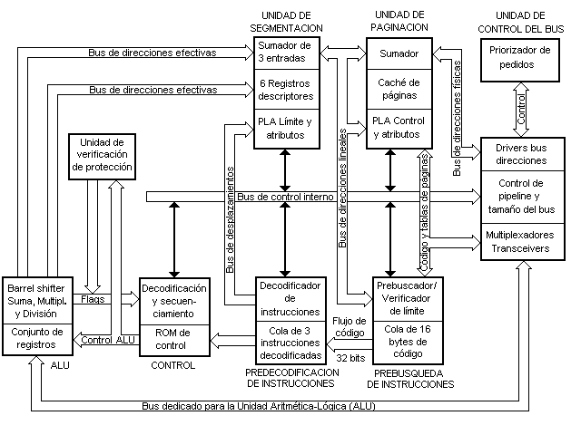

2.1 ORGANIZACION DEL PROCESADOR
La Unidad de Procesamiento (CPU) controla el funcionamiento del computador y lleva a cabo sus funciones de procesamiento de datos. Frecuentemente se le llama procesador.
Un procesador, incluye tanto registros visibles por el usuario como registros de control/estado. Los registros visibles por el usuario pueden ser de uso general o tener una utilidad especial, mientras que los registros de control y estado se usan para controlar el funcionamiento del procesador, un claro ejemplo es el contador de programa.
Lleva a cabo una gran variedad de:
- Cálculos
- Comparaciones numéricas
- Transferencias de datos como respuesta a las peticiones de los programas que están siendo ejecutados en memoria.
La CPU controla las operaciones básicas del ordenador enviando y recibiendo señales de control, direcciones de memoria y datos de un lugar a otro de la computadora a través de un grupo de canales llamados BUS.
La Unidad Central de Proceso está constituida internamente por:
Los procesadores utilizan la segmentación de instrucciones para acelerar la ejecución. La segmentación de cauce se puede dividir en ciclo de instrucción en varias etapas separadas que operan secuencialmente, tales como la captación de instrucción, decodificación de instrucción, cálculo de direcciones de operando, ejecución de instrucción y estructura del operando resultado.
A continuación se muestra cómo se organiza un procesador, para esto se tiene que considerar los siguientes requisitos:
- Captar instrucciones: el procesador lee una instrucción de memoria (registro, cache o memoria principal).
- Interpretar instrucción: la instrucción se codifica para determinar qué acción es necesario.
- Captar datos: la ejecución de una instrucción puede exigir leer datos de memoria o de un módulo de E/S.
- Procesar datos: la ejecución de una instrucción puede exigir llevar a cabo alguna operación aritmética o lógica con los datos.
- Escribir datos: los resultados de una ejecución pueden exigir escribir datos en la memoria o en el módulo de E/S.
Para hacer estas cosas, el procesador necesita almacenar instrucciones y datos temporalmente mientras una instrucción está ejecutándose, en otras palabras el procesador necesita una pequeña memoria interna, también llamados registros.
2.2 ESTRCTURA DE REGISTROS
Registros del CPU:Se emplean para controlar las instrucciones en ejecución, manejar direccionamiento de memoria y propiciar la capacidad aritmética.
Los registros vienen de tres tipos: datos, direcciones e índice, que tiene lugar en casi todos los aspectos de la operación del CPU.
El tamaño de un registro depende del CPU; los más simples tienen registros que aceptan 8 o 16 bits de datos y los más complejos tienen registros de 32, 48 o 64 bits.
2.2.1 REGISTROS VISIBLES PARA EL USUARIO
Un registro visible al usuario es aquél que puede ser referenciado por medio del lenguaje máquina que ejecuta la CPU. Prácticamente todos los diseños contemporáneos de CPUs están provistos de varios registros visibles al usuario, en oposición a disponer de un único acumulador.
Podemos clasificarlos en:
- Uso General
- Datos
- Direcciones
- Códigos de Condición
Los registros de uso general pueden ser asignados por el programador a diversas funciones. A veces, su uso dentro del repertorio de instrucciones es para contener el operando para cualquier código de operación.Esto proporciona una utilización de registros de auténtico uso general. Con frecuencia, sin embargo, existen restricciones. Por ejemplo, puede haber registros específicos para operaciones en coma flotante.
En algunos casos los registros de uso general pueden ser utilizados para funciones de direccionamiento. En otros casos hay una separación clara o parcial entre registros de datos y registros de direcciones.Los registros de datos pueden ser usados únicamente para contener datos y no se pueden emplear en el cálculo de una dirección de operando.
Los registros de dirección pueden ser en sí registros de uso más o menos general, o pueden estar dedicados a un modo de direccionamiento particular. El caso más conocido es el puntero a pila. La cantidad de registros generales o especializados es una cuestión de diseño. No hay solución óptima, pero la tendencia parece ir hacia el uso de registros especializados.Otro problema de diseño es el numero de registros, de uso general o de datos más direcciones, que tienen que incluirse.
A mayor cantidad de registros se requieren mayor cantidad de bits en el campo de operando. Parece óptimo entre 8 y 32 registros. Menos registros se traducen en más referencias a memoria; más registros no reducen notablemente las referencias a memoria. Por último, está la cuestión de la longitud de los registros.
Los registros que han de contener direcciones han de ser lo suficientemente grandes como para albergar la dirección más grande. Los registros de datos deben ser capaces de contener valores de la mayoría de tipos de datos.Algunas máquinas permiten que los registros contiguos sean usados como uno para contener valores de doble longitud.
Una categoría final de registros, que es al menos parcialmente visible al usuario, contiene códigos de condición (también llamados indicadores o flags).Los códigos de condición son bits fijados por el hardware de la CPU como resultado de alguna operación. Por ejemplo, una operación aritmética puede producir un resultado positivo, negativo o nulo, o con desbordamiento. Además de almacenarse el propio resultado en un registro o en la memoria, se obtiene también un código de condición.
Los bits de códigos de condición se reúnen en uno o más registros. Por lo general, forman parte de un registro de control.Comúnmente, las instrucciones de máquina permiten que estos bits sean leídos por referencia implícita, pero no pueden ser alterados por el programador.
2.2.2 REGISTROS DE CONTROL Y DE ESTADOS
Registros de control
Hay diversos registros de la CPU que se pueden emplear para controlar su funcionamiento. La mayoría de éstos, en la mayor parte de las máquinas, no son visibles al usuario. Algunos de ellos pueden ser visibles a instrucciones de máquina ejecutadas en un modo de control o de sistema operativo.
Naturalmente, máquinas diferentes tendrán diferentes organizaciones de registros y usará distinta terminología. Se enumera aquí una lista razonablemente completa de tipos de registros, con una breve descripción. Son esenciales cuatro registros para la ejecución de una instrucción: el contador de programa, el registro de dirección, el registro de instrucción y el registro de datos.
El contador de programa contiene una dirección de instrucción. Típicamente, la CPU actualiza el PC después de cada captación de instrucción de manera que siempre apunta a la siguiente instrucción a ejecutar. Una instrucción de bifurcación o salto también modificará el contenido de PC. La instrucción captada se carga en el registro de instrucción, donde son analizados el código de operación y los campos de operando.Se intercambian datos con la memoria por medio de registro de direcciones y el de datos. En un sistema con organización de bus, el de direcciones se conecta directamente al bus de direcciones, y el de datos directamente al bus de datos.
Los registros visibles al usuario, sucesivamente, intercambian datos con el de datos. Los cuatro registros que acaban de mencionar se usan para la transferencia de datos entre la CPU y la memoria. Dentro de la CPU, los datos tienen que ofrecerse a la ALU para su procesamiento. La ALU puede tener acceso directo al de datos y a los registros visibles al usuario. Como alternativa, puede haber registros intermedios adicionales en el límite de la ALU; estos registros sirven como registros de entrada y salida de la ALU e intercambian datos con el de datos y los registros visibles al usuario.
Registros de estado
El registro de estado, también conocido como registro de bandera, palabra de estado del programa y registro de código de condición, se define como un conjunto de bits de bandera dentro de un procesador.
Un registro es un circuito procesador y es muy parecido a una ubicación de memoria, lo que significa que los datos podrían escribirse y leerse. A diferencia de una ubicación de memoria, el registro de estado a menudo no tiene una dirección porque el microprocesador la usa internamente. En una unidad central de procesamiento (CPU) de 8 bits, se puede establecer un bit de registro de estado, igual al número 1, o borrar , igual al número 0, mediante una variedad de resultados de operación del procesador. El procesador a veces establece o borra los bits, pero otras veces, una instrucción de programa particular establece o borra los bits.
Los bits de registro de estado también se denominan banderas o bits de bandera, y el programador los utiliza para ciertos fines de programación. Cada bandera en un registro de estado tiene un propósito único.El indicador de acarreo se establece si una operación anterior hizo que el séptimo bit - o indicador negativo - se desbordara, o hiciera que el indicador de transporte se desbordara. Se establece durante los cambios de lógica, comparación y aritmética. El indicador de cero se establece si el resultado de la operación más reciente fue 0.
Un indicador llamado "deshabilitar interrupción" funciona permitiendo o deshabilitando la operación de interrupciones, que son instrucciones que detienen temporalmente ciertas operaciones para que se puedan realizar otras operaciones. Cuando se establece este indicador en particular, no se permite que funcionen las interrupciones, pero cuando está claro, se permiten las interrupciones. Otra bandera llamada bandera decimal permite al procesador seguir un modo binario más avanzado para realizar ecuaciones aritméticas impecables. Cuando se establece la bandera, utiliza este modo binario avanzado. Otro bit de registro es el bit de interrupción, que se establece cuando se ejecuta el comando Force Interrupt (BRK).
2.2.3 EJEMPLOS DE REGISTROS DE CPU REALES
En algún diseño concreto de procesador es posible encontrar otros registros relativos a estado y control. Puede existir un puntero a un bloque de memoria que contenga información de estado adicional. En las máquinas que usan interrupciones vectorizadas puede existir un registro de vector de interrupción. Si se utiliza una pila para llevar a cabo ciertas funciones, se necesita un puntero de pila del sistema. En un sistema de memoria virtual se usa un puntero a la tabla de páginas. Por último, pueden emplearse registros para el control de operaciones de E/S. En el diseño de la organización de los registros de control y estado entran en juego varios factores. Una cuestión primordial es el soporte del sistema operativo. Algunos tipos de información de control son de utilidad específica para el sistema operativo. Si el diseñador del procesador posee una comprensión funcional del sistema operativo que se va a utilizar, la organización de los registros puede adaptarse hasta cierto punto a ese sistema operativo. Otra decisión importante en el diseño es la distribución de información de control entre registros y memoria. Es frecuente dedicar los primeros (más bajos) pocos cientos o miles de palabras de memoria para fines de control. El diseñador debe decidir cuánta información de control debiera estar en registros y cuánta en memoria. Se presenta el compromiso habitual entre coste y velocidad.
2.3 EL CICLO DE INTSTRUCCION
Ciclos de computadora
La búsqueda es el proceso de obtener instrucciones de un programa o un elemento de datos de la memoria. El término decodificar se refiere al proceso de traducir las instrucciones a señales que la computadora puede ejecutar.Ejecutar es el proceso de llevar a cabo los comandos. Almacenamiento en este contexto significa escribir el resultado a la memoria.
En algunas computadoras, el procesador busca, decodifica, ejecuta y almacena solo una instrucción a la vez. En estas computadoras el procesador espera hasta que una instrucción completa las cuatro etapas del ciclo antes de iniciar a trabajar con la siguiente instrucción.
Hoy día la mayoría de las computadoras personales soportan un concepto llamado pipelining:Con pipelining los procesadores inician la búsqueda de una segunda instrucción antes de que se haya completado el ciclo de la computadora de la primera instrucción. Los procesadores que cuentan con pipelining habilitado son más rápidos en el procesamiento porque no tienen que esperar para que una instrucción complete el ciclo de computadora antes de buscar la siguiente.
2.3.1 CICLO FETCH-DECODE-EXECUTE
El encargado de ejecutar un programa en una computadora u otro sistema computacional es el CPU, lo realiza siguiendo el llamado ciclo Fetch Decode Execute, con este ciclo se ejecutan todas las tareas que una computadora puede realizar.Este ciclo tiene algunas variantes y conforme ha avanzado el tiempo y la tecnología ha sufrido algunos cambios, pero el ciclo básico se conforma de las siguientes etapas:
- Traer la instrucción: Se obtiene la instrucción desde memoria y se almacena en el registro del CPU para instrucciones.
- Decodificar la instrucción: Se identifica el modo de direccionamiento de la instrucción y la ubicación de los datos a tratar, ya sea de memoria, registro o instrucción directamente.
- Carga de Parámetros: Se ejecuta la lectura, cargando todos los datos identificados en el paso anterior.
- Ejecutar: Se ejecuta la instrucción ya configurada, realiza la tarea indicada, ya sea una suma, resta, almacenar información, extraer información etc.
- Almacenar: Se almacena el resultado obtenido de ejecutar la instrucción, por ejemplo, el resultado de una suma o un índice (Número) como resultado de éxito de almacenar u obtener información de un archivo, entre otros.
- Actualizar PC: Esta etapa es la de actualizar el registro PC (Program Counter) que contiene la siguiente dirección a ejecutar.
Evidentemente al ser un ciclo estas etapas se repiten constantemente durante el funcionamiento de la computadora.
Se debe considerar que el ciclo expuesto anteriormente es muy básico. Como se mencionaba hoy en día estos ciclos han tenido algunas alteraciones y optimizado de gran manera, como se sabe los sistemas de hoy en día son multitareas, lo cual conlleva a una alteración en este ciclo, además de las diferentes técnicas para reducir el tiempo de ejecución de instrucciones con temas de concurrencia y paralelismo en los procesadores modernos.
El ciclo expuesto nos muestra un poco la forma en la que las computadoras funcionan, todo el proceso que conlleva ejecutar una instrucción que puede parecer muy simple, además este ciclo básico permite darse una idea de cómo ha evolucionado los procesadores y las técnicas para reducir el tiempo de ejecución dado que los sistemas actuales ejecutan de forma simultánea muchas veces este ciclo, siendo este modificado y más eficiente.
2.3.2 SEGMENTACION DE INSTRUCCIONES
La segmentación es un método por el cual se consigue aumentar el rendimiento de algunos sistemas electrónicos digitales. Se usa principalmente en los microprocesadores.
El nombre, por analogía, viene de que para impulsar el gas en un oleoducto a la máxima velocidad posible es necesario dividir el oleoducto en tramos y colocar una bomba que dé un nuevo impulso al gas.
El símil con la programación existe en que los cálculos deben ser registrados o sincronizados con el reloj cada cierto tiempo para que la ruta crítica (tramo con más carga o retardo computacional entre dos registros de reloj) se reduzca.
La ruta crítica es en realidad la frecuencia máxima de trabajo alcanzada por el conjunto. A mayor ruta crítica (tiempo o retraso entre registros) menor es la frecuencia máxima de trabajo y a menor ruta crítica mayor frecuencia de trabajo. La una es la inversa de la otra. Repartir o segmentar equitativamente el cálculo hace que esa frecuencia sea la óptima a costa de más área para el almacenamiento o registro de los datos intervinientes y de un retraso o latencia (en ciclos de reloj/tiempo) en la salida del resultado equivalente al número de segmentaciones o registros realizados.
La ventaja primordial de este sistema es que, tal y como se muestra en la imagen, una vez el canal (pipe) está lleno, es decir, después de una latencia de cuatro en la imagen, los resultados de cada comando vienen uno tras otro cada flanco de reloj y sin latencia extra por estar encadenados dentro del mismo canal. Todo esto habiendo maximizado la frecuencia máxima de trabajo.
2.3.3 CONJUNTO DE INSTRUCCIONES.CARACTERISTICAS Y FUNCIONES
Un conjunto de instrucciones o repertorio de instrucciones, juego de instrucciones o ISA (del inglés Instruction Set Architecture, Arquitectura del Conjunto de Instrucciones) es una especificación que detalla las instrucciones que una CPU de un ordenador puede entender y ejecutar, o el conjunto de todos los comandos implementados por un diseño particular de una CPU.
El término describe los aspectos del procesador generalmente visibles a un programador, incluyendo los tipos de datos nativos, las instrucciones, los registros, la arquitectura de memoria y las interrupciones, entre otros aspectos.
Existe principalmente de 3 tipos: CISC (Complex Instruction Set Computer), RISC (Reduced Instruction Set Computer) y SISC (Specific Instruction Set Computer).
La arquitectura del conjunto de instrucciones (ISA) se emplea a veces para distinguir este conjunto de características de la microarquitectura, que son los elementos y técnicas que se emplean para implementar el conjunto de instrucciones. Entre estos elementos se encuentras las microinstrucciones y los sistemas de caché.Procesadores con diferentes diseños internos pueden compartir un conjunto de instrucciones; por ejemplo el Intel Pentium y AMD Athlon implementan versiones casi idénticas del conjunto de instrucciones x86, aunque tienen diseños internos completamente opuestos.
2.3.4 MODOS DE DIRECCIONAMIENTO
Contar con diferentes formatos de instrucciones, implica contar con diferentes formas de obtener los operandos de las instrucciones. Por lo general a estas múltiples formas se les conoce como modos de direccionamiento. Los modos de direccionamiento en MIPS son:
- Direccionamiento por registro, donde los operandos son registros. Los datos a operar están contenidos en 2 registros de 32 bits y el resultado será colocado en otro registro, del mismo tamaño. Ejemplos de instrucciones que usan este modo de direccionamiento: add, sub, slt, etc.
- Direccionamiento base o desplazamiento, donde uno de los operandos está en una localidad de memoria cuya dirección es la suma de un registro y una constante que forma parte de la misma instrucción. Ejemplos de instrucciones que usan este modo de direccionamiento: lw, sw, etc.
- Direccionamiento inmediato, donde uno de los operandos es una constante que está en la misma instrucción. Ejemplos de instrucciones que usan este modo de direccionamiento: addi, slti, etc.
- Direccionamiento relativo al PC, donde se forma una dirección sumando una constante, que está en la instrucción, con el registro PC (Program Counter). El resultado de la suma corresponde a la dirección destino si un brinco condicional se va a realizar. Ejemplos de instrucciones que usan este modo de direccionamiento: beq y bne.
- Direccionamiento pseudo directo, donde la dirección destino de un salto corresponde a la concatenación de 26 bits que están en la misma instrucción con los bits más significativos del PC. Ejemplos de instrucciones que usan este modo de direccionamiento: j y jal.
Es importante mencionar que estamos estudiando una arquitectura con direcciones de 32 bits, sin embargo, MIPS, como muchas otras arquitecturas, tiene una extensión que maneja direcciones de 64 bits. Esto como una respuesta a la necesidad de manejar programas cada vez más grandes.
2.4 CASOS DE ESTUDIO DE CPU REALES
- I-8086: Los registros del procesador, se usan para contener los datos con que se está trabajando puesto que el acceso a los registros es mucho más rápido que los accesos a memoria. Se pueden realizar operaciones aritméticas y lógicas, comparaciones, entre otras. Los modos del 8086 son indirectos por registro, indexados o directos por registro.
- Motorola 68000: El mismo direccionamiento lleva implícito el tipo de registro sobre el que trabaja (direcciones o datos). Está basado en dos bancos de 8 registros de 32 bits. Un banco es de datos (Dn) y el otro de punteros (An). Además contiene un contador de programa de 32 bits y un registro de estado de 16 bits.
- 80386: Para este microprocesador existe un modo nuevo que requiere un byte adicional denominado SIB (escala, índice, base) que se añade al byte de operandos, es útil para direccionar elementos de vectores de longitudes diferentes en bucles. Es una alternativa a los modos autoindexados que esta máquina no soporta.